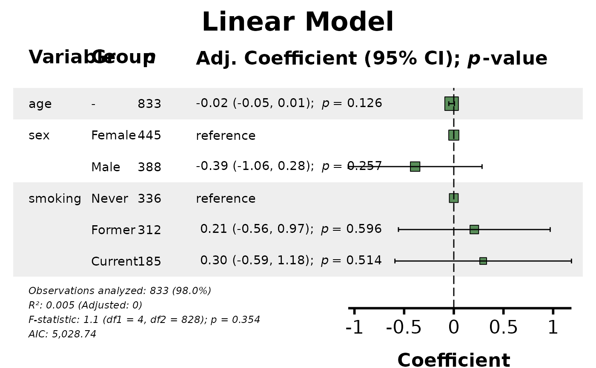
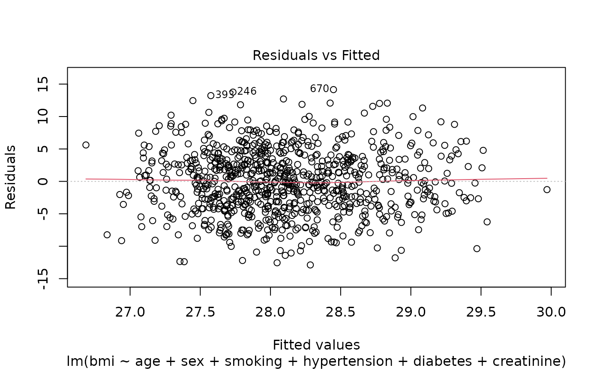
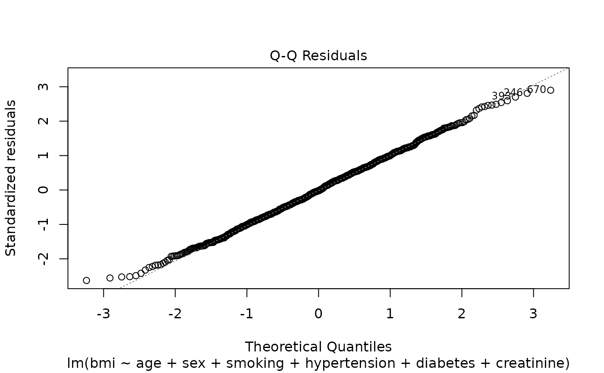
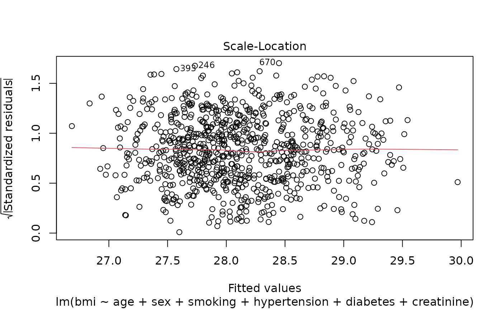
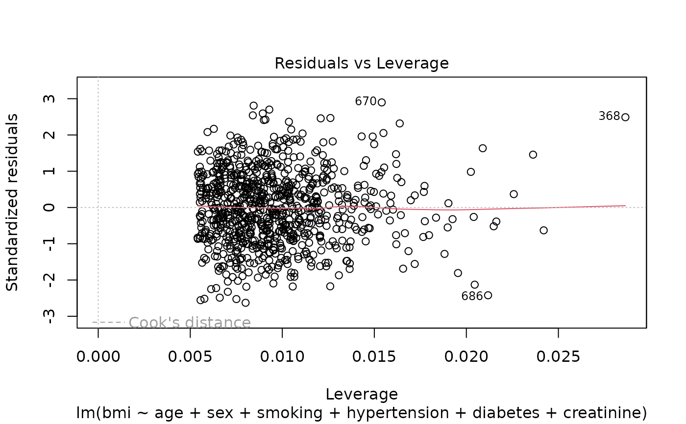
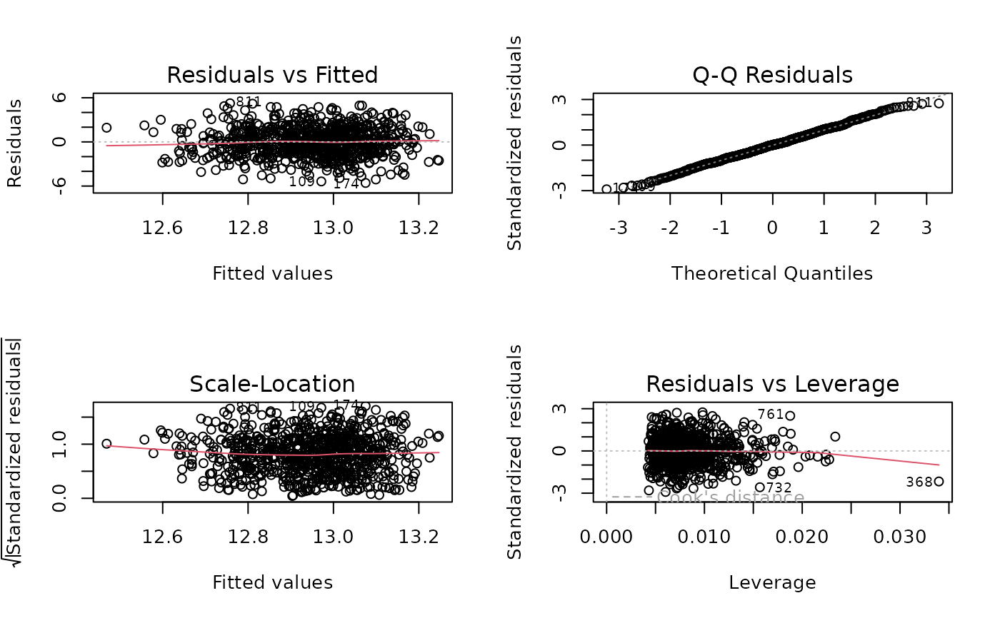

Generates a publication-ready forest plot that combines a formatted data table with a graphical representation of regression coefficients from a linear model. The plot integrates variable names, group levels, sample sizes, coefficients with confidence intervals, p-values, and model diagnostics (R², F-statistic, AIC) in a single comprehensive visualization designed for manuscripts and presentations.
lmforest(
x,
data = NULL,
title = "Linear Model",
effect_label = "Coefficient",
digits = 2,
p_digits = 3,
conf_level = 0.95,
font_size = 1,
annot_size = 3.88,
header_size = 5.82,
title_size = 23.28,
plot_width = NULL,
plot_height = NULL,
table_width = 0.6,
show_n = TRUE,
indent_groups = FALSE,
condense_table = FALSE,
bold_variables = FALSE,
center_padding = 4,
zebra_stripes = TRUE,
ref_label = "reference",
labels = NULL,
units = "in",
color = "#5A8F5A",
qc_footer = TRUE
)Either a fitted linear model object (class lm or lmerMod),
a fit_result object from fit, or a fullfit_result
object from fullfit. When a fit_result or fullfit_result
is provided, the model, data, and labels are automatically extracted.
Note: GLM objects are not accepted - use glmforest instead.
A data.frame or data.table containing the original data used to
fit the model. If NULL (default) and x is a model, the function
attempts to extract data from the model object. If x is a fit_result,
data is extracted automatically. Providing data explicitly is recommended when
passing a model directly.
Character string specifying the plot title displayed at the top.
Default is "Linear Model". Use descriptive titles for publication.
Character string for the effect measure label on the
forest plot axis. Default is "Coefficient". Could be customized to
reflect units (e.g., "Change in BMI (kg/m²)").
Integer specifying the number of decimal places for coefficients and confidence intervals. Default is 2.
Integer specifying the number of decimal places for p-values.
P-values smaller than 10^(-p_digits) are displayed as "< 0.001"
(for p_digits = 3), "< 0.0001" (for p_digits = 4), etc.
Default is 3.
Numeric confidence level for confidence intervals. Must be
between 0 and 1. Default is 0.95 (95% confidence intervals). The CI
percentage is automatically displayed in column headers (e.g., "90% CI"
when conf_level = 0.90).
Numeric multiplier controlling the base font size for all text elements. Default is 1.0.
Numeric value controlling the relative font size for data annotations. Default is 3.88.
Numeric value controlling the relative font size for column headers. Default is 5.82.
Numeric value controlling the relative font size for the main plot title. Default is 23.28.
Numeric value specifying the intended output width in
specified units. Default is NULL (automatic).
Numeric value specifying the intended output height in
specified units. Default is NULL (automatic).
Numeric value between 0 and 1 specifying the proportion of total plot width allocated to the data table. Default is 0.6.
Logical. If TRUE, includes a column showing group-specific
sample sizes. Note: Linear models don't have "events" so there's no
show_events parameter. Default is TRUE.
Logical. If TRUE, indents factor levels under
their parent variable name, creating hierarchical structure. The "Group"
column is hidden when TRUE. Default is FALSE.
Logical. If TRUE, condenses binary categorical
variables into single rows. Automatically sets indent_groups = TRUE.
Default is FALSE.
Logical. If TRUE, variable names are displayed
in bold. If FALSE (default), variable names are displayed in plain
text.
Numeric value specifying horizontal spacing between table and forest plot. Default is 4.
Logical. If TRUE, applies alternating gray
background shading to different variables. Default is TRUE.
Character string to display for reference categories of
factor variables. Default is "reference".
Named character vector providing custom display labels for
variables. Example: c(age = "Age (years)", height = "Height (cm)").
Default is NULL.
Character string specifying units for plot dimensions:
"in" (inches), "cm", or "mm". Default is "in".
Character string specifying the color for coefficient point
estimates in the forest plot. Default is "#5A8F5A" (green). Use
hex codes or R color names.
Logical. If TRUE, displays model quality control
statistics in the footer (observations analyzed, R-squared, adjusted R-squared,
F-statistic, AIC). Default is TRUE.
A ggplot object containing the complete forest plot. The plot
can be displayed, saved, or further customized.
The returned object includes an attribute "recommended_dims"
accessible via attr(plot, "recommended_dims"), containing:
Numeric. Recommended plot width in specified units
Numeric. Recommended plot height in specified units
Character. The units used
Recommendations are printed to console if dimensions are not specified.
Linear Model-Specific Features:
The linear model forest plot differs from logistic and Cox plots in several ways:
Coefficients: Raw regression coefficients shown (not exponentiated)
Reference line: At coefficient = 0 (not at 1)
Linear scale: Forest plot uses linear scale (not log scale)
No events column: Only sample sizes shown (no event counts)
R² statistics: Model fit assessed by R² and adjusted R²
F-test: Overall model significance from F-statistic
Plot Components:
Title: Centered at top
Data Table (left): Contains:
Variable: Predictor names
Group: Factor levels (if applicable)
n: Sample sizes by group
Coefficient (95% CI); p-value: Raw coefficients with CIs and p-values
Forest Plot (right):
Point estimates (squares sized by sample size)
95% confidence intervals (error bars)
Reference line at coefficient = 0
Linear scale
Model Statistics (footer):
Observations analyzed (with percentage of total data)
R² and adjusted R²
F-statistic with degrees of freedom and p-value
AIC
Interpreting Coefficients:
Linear regression coefficients represent the change in the outcome variable for a one-unit change in the predictor:
Continuous predictors: Coefficient = change in Y per unit of X
Binary predictors: Coefficient = difference in Y between groups
Factor predictors: Coefficients = differences from reference category
Sign matters: Positive = increase in Y, Negative = decrease in Y
Zero crossing: CI crossing zero suggests no significant effect
Example: If the coefficient for "age" is 0.50 when predicting BMI, BMI increases by 0.50 kg/m² for each additional year of age.
Model Fit Statistics:
The footer displays key diagnostics:
R²: Proportion of variance explained (0 to 1)
0.0-0.3: Weak explanatory power
0.3-0.5: Moderate
0.5-0.7: Good
>0.7: Strong (rare in social/biological sciences)
Adjusted R²: R² penalized for number of predictors
Always ≤ R²
Preferred for model comparison
Accounts for model complexity
F-statistic: Tests null hypothesis that all coefficients = 0
Degrees of freedom: df1 = # predictors, df2 = # observations - # predictors - 1
Significant p-value indicates model explains variance better than intercept-only
AIC: For model comparison (lower is better)
Assumptions:
Linear regression assumes:
Linearity of relationships
Independence of observations
Homoscedasticity (constant variance)
Normality of residuals
No multicollinearity
Check assumptions using:
plot(model) for diagnostic plots
car::vif(model) for multicollinearity
lmtest::bptest(model) for heteroscedasticity
shapiro.test(residuals(model)) for normality
Reference Categories:
For factor variables:
First level is the reference (coefficient = 0)
Other levels show difference from reference
Reference displayed with ref_label
Relevel factors before modeling if needed:
factor(x, levels = c("desired_ref", ...))
Sample Size Reporting:
The "n" column shows:
For continuous variables: Total observations with non-missing data
For factor variables: Number of observations in each category
Footer shows total observations analyzed and percentage of original data (accounting for missing values)
# Load example data
data(clintrial)
data(clintrial_labels)
# Example 1: Basic linear model forest plot
model1 <- lm(bmi ~ age + sex + smoking,
data = clintrial)
plot1 <- lmforest(model1, data = clintrial)
#> Recommended plot dimensions: width = 13.0 in, height = 5.0 in
print(plot1)

# Example 2: With custom labels and title
plot2 <- lmforest(
model = model1,
data = clintrial,
title = "Predictors of Body Mass Index",
effect_label = "Change in BMI (kg/m²)",
labels = clintrial_labels
)
#> Error in lmforest(model = model1, data = clintrial, title = "Predictors of Body Mass Index", effect_label = "Change in BMI (kg/m²)", labels = clintrial_labels): unused argument (model = model1)
print(plot2)
#> Error: object 'plot2' not found
# Example 3: More comprehensive model
model3 <- lm(
bmi ~ age + sex + smoking + hypertension + diabetes + creatinine,
data = clintrial
)
plot3 <- lmforest(
model = model3,
data = clintrial,
labels = clintrial_labels,
indent_groups = TRUE
)
#> Error in lmforest(model = model3, data = clintrial, labels = clintrial_labels, indent_groups = TRUE): unused argument (model = model3)
print(plot3)
#> Error: object 'plot3' not found
# Example 4: Check model diagnostics
summary(model3)
#>
#> Call:
#> lm(formula = bmi ~ age + sex + smoking + hypertension + diabetes +
#> creatinine, data = clintrial)
#>
#> Residuals:
#> Min 1Q Median 3Q Max
#> -12.884 -3.460 -0.092 3.293 14.151
#>
#> Coefficients:
#> Estimate Std. Error t value Pr(>|t|)
#> (Intercept) 28.60324 1.12193 25.495 <2e-16 ***
#> age -0.02089 0.01442 -1.449 0.1478
#> sexMale -0.39466 0.34270 -1.152 0.2498
#> smokingFormer 0.18255 0.38858 0.470 0.6386
#> smokingCurrent 0.36159 0.45285 0.798 0.4248
#> hypertensionYes 0.08068 0.34885 0.231 0.8172
#> diabetesYes 0.87531 0.40072 2.184 0.0292 *
#> creatinine 0.52531 0.57781 0.909 0.3635
#> ---
#> Signif. codes: 0 ‘***’ 0.001 ‘**’ 0.01 ‘*’ 0.05 ‘.’ 0.1 ‘ ’ 1
#>
#> Residual standard error: 4.921 on 825 degrees of freedom
#> (17 observations deleted due to missingness)
#> Multiple R-squared: 0.01227, Adjusted R-squared: 0.003892
#> F-statistic: 1.464 on 7 and 825 DF, p-value: 0.1765
#>
plot(model3) # Diagnostic plots




# Example 5: Condensed layout
model5 <- lm(
bmi ~ age + sex + smoking + hypertension + diabetes,
data = clintrial
)
plot5 <- lmforest(
model = model5,
data = clintrial,
condense_table = TRUE,
labels = clintrial_labels
)
#> Error in lmforest(model = model5, data = clintrial, condense_table = TRUE, labels = clintrial_labels): unused argument (model = model5)
print(plot5)
#> Error: object 'plot5' not found
# Example 6: Custom color
plot6 <- lmforest(
model = model1,
data = clintrial,
color = "#2ECC71", # Bright green
labels = clintrial_labels
)
#> Error in lmforest(model = model1, data = clintrial, color = "#2ECC71", labels = clintrial_labels): unused argument (model = model1)
print(plot6)
#> Error: object 'plot6' not found
# Example 7: Hide sample sizes
plot7 <- lmforest(
model = model1,
data = clintrial,
show_n = FALSE,
labels = clintrial_labels
)
#> Error in lmforest(model = model1, data = clintrial, show_n = FALSE, labels = clintrial_labels): unused argument (model = model1)
print(plot7)
#> Error: object 'plot7' not found
# Example 8: Adjust table width
plot8 <- lmforest(
model = model3,
data = clintrial,
table_width = 0.55,
labels = clintrial_labels
)
#> Error in lmforest(model = model3, data = clintrial, table_width = 0.55, labels = clintrial_labels): unused argument (model = model3)
print(plot8)
#> Error: object 'plot8' not found
# Example 9: Get recommended dimensions
plot9 <- lmforest(model1, data = clintrial)
#> Recommended plot dimensions: width = 13.0 in, height = 5.0 in
dims <- attr(plot9, "recommended_dims")
cat("Recommended:", dims$width, "x", dims$height, dims$units, "\n")
#> Recommended: 13 x 5 in
# Example 10: Specify exact dimensions
plot10 <- lmforest(
model = model1,
data = clintrial,
plot_width = 12,
plot_height = 7,
labels = clintrial_labels
)
#> Error in lmforest(model = model1, data = clintrial, plot_width = 12, plot_height = 7, labels = clintrial_labels): unused argument (model = model1)
# Example 11: Different units
plot11 <- lmforest(
model = model1,
data = clintrial,
plot_width = 30,
plot_height = 20,
units = "cm",
labels = clintrial_labels
)
#> Error in lmforest(model = model1, data = clintrial, plot_width = 30, plot_height = 20, units = "cm", labels = clintrial_labels): unused argument (model = model1)
# Example 12: No zebra stripes
plot12 <- lmforest(
model = model1,
data = clintrial,
zebra_stripes = FALSE,
labels = clintrial_labels
)
#> Error in lmforest(model = model1, data = clintrial, zebra_stripes = FALSE, labels = clintrial_labels): unused argument (model = model1)
print(plot12)
#> Error: object 'plot12' not found
# Example 13: Custom reference label
plot13 <- lmforest(
model = model1,
data = clintrial,
ref_label = "0.00 (ref)",
labels = clintrial_labels
)
#> Error in lmforest(model = model1, data = clintrial, ref_label = "0.00 (ref)", labels = clintrial_labels): unused argument (model = model1)
print(plot13)
#> Error: object 'plot13' not found
# Example 14: Larger fonts for presentation
plot14 <- lmforest(
model = model1,
data = clintrial,
font_size = 1.3,
title_size = 26,
labels = clintrial_labels
)
#> Error in lmforest(model = model1, data = clintrial, font_size = 1.3, title_size = 26, labels = clintrial_labels): unused argument (model = model1)
print(plot14)
#> Error: object 'plot14' not found
# Example 15: More decimal places
plot15 <- lmforest(
model = model1,
data = clintrial,
digits = 3,
labels = clintrial_labels
)
#> Error in lmforest(model = model1, data = clintrial, digits = 3, labels = clintrial_labels): unused argument (model = model1)
print(plot15)
#> Error: object 'plot15' not found
# Example 16: Hemoglobin as outcome
model16 <- lm(
hemoglobin ~ age + sex + bmi + smoking + creatinine,
data = clintrial
)
plot16 <- lmforest(
model = model16,
data = clintrial,
title = "Predictors of Baseline Hemoglobin",
effect_label = "Change in Hemoglobin (g/dL)",
labels = clintrial_labels
)
#> Error in lmforest(model = model16, data = clintrial, title = "Predictors of Baseline Hemoglobin", effect_label = "Change in Hemoglobin (g/dL)", labels = clintrial_labels): unused argument (model = model16)
print(plot16)
#> Error: object 'plot16' not found
# Check assumptions
par(mfrow = c(2, 2))
plot(model16)

par(mfrow = c(1, 1))
# Example 17: Publication-ready final plot
final_model <- lm(
bmi ~ age + sex + race + smoking + hypertension +
diabetes + creatinine + hemoglobin,
data = clintrial
)
# Check model fit
summary(final_model)
#>
#> Call:
#> lm(formula = bmi ~ age + sex + race + smoking + hypertension +
#> diabetes + creatinine + hemoglobin, data = clintrial)
#>
#> Residuals:
#> Min 1Q Median 3Q Max
#> -13.0339 -3.4869 -0.1152 3.2513 14.2023
#>
#> Coefficients:
#> Estimate Std. Error t value Pr(>|t|)
#> (Intercept) 27.90135 1.62356 17.185 <2e-16 ***
#> age -0.02120 0.01445 -1.468 0.1426
#> sexMale -0.43316 0.34476 -1.256 0.2093
#> raceBlack 0.40041 0.49066 0.816 0.4147
#> raceAsian -0.06221 0.55698 -0.112 0.9111
#> raceOther -0.92045 0.88886 -1.036 0.3007
#> smokingFormer 0.16989 0.38971 0.436 0.6630
#> smokingCurrent 0.34962 0.45411 0.770 0.4416
#> hypertensionYes 0.08594 0.34926 0.246 0.8057
#> diabetesYes 0.83226 0.40284 2.066 0.0391 *
#> creatinine 0.60260 0.58089 1.037 0.2999
#> hemoglobin 0.05081 0.08976 0.566 0.5715
#> ---
#> Signif. codes: 0 ‘***’ 0.001 ‘**’ 0.01 ‘*’ 0.05 ‘.’ 0.1 ‘ ’ 1
#>
#> Residual standard error: 4.926 on 821 degrees of freedom
#> (17 observations deleted due to missingness)
#> Multiple R-squared: 0.01514, Adjusted R-squared: 0.001943
#> F-statistic: 1.147 on 11 and 821 DF, p-value: 0.3208
#>
final_plot <- lmforest(
model = final_model,
data = clintrial,
title = "Multivariable Linear Regression: Predictors of Body Mass Index",
effect_label = "Change in BMI (kg/m²)",
labels = clintrial_labels,
indent_groups = TRUE,
zebra_stripes = TRUE,
show_n = TRUE,
color = "#5A8F5A",
digits = 2
)
#> Error in lmforest(model = final_model, data = clintrial, title = "Multivariable Linear Regression: Predictors of Body Mass Index", effect_label = "Change in BMI (kg/m²)", labels = clintrial_labels, indent_groups = TRUE, zebra_stripes = TRUE, show_n = TRUE, color = "#5A8F5A", digits = 2): unused argument (model = final_model)
# Save for publication
dims <- attr(final_plot, "recommended_dims")
#> Error: object 'final_plot' not found
# ggsave("figure3_linear.pdf", final_plot,
# width = dims$width, height = dims$height)
# ggsave("figure3_linear.png", final_plot,
# width = dims$width, height = dims$height, dpi = 300)